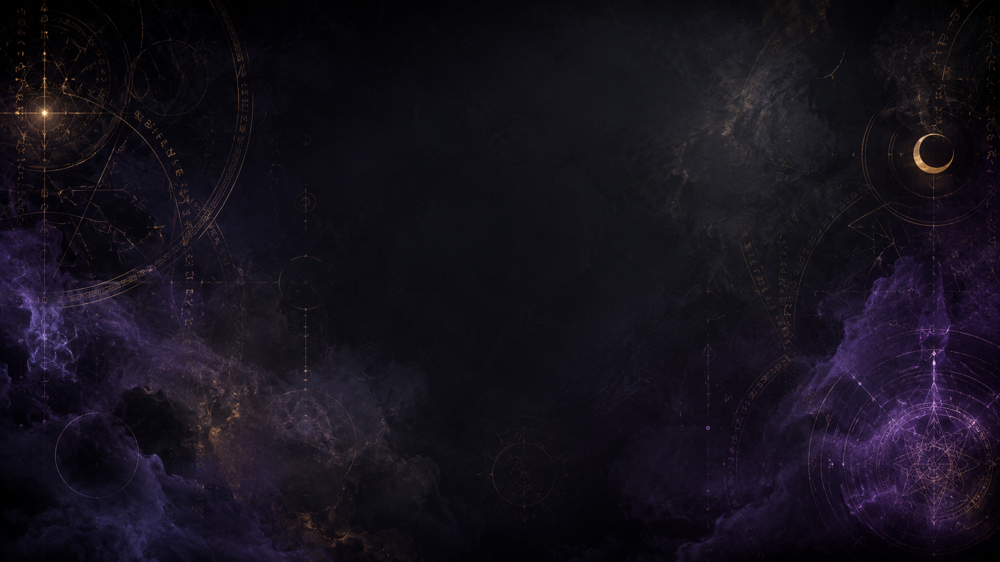

Store and Socials
Future offerings, updates, and places to follow the project.
Visit the store frontA growing spiritual study hub
This site is a basic start for a bigger idea I have. I want it to be a place for myths, rituals, astrology, prayers, herbs, symbols, and different spiritual traditions from around the world. Later on I would like to add things like an astrology calendar, a sign calculator, and a grimoire index where people can look through different topics. For now I am just building the first simple page and learning how the HTML works. One topic I think is interesting is Walpurgis Night .

Cosmic doorway art for the grimoire hub.
Pick a feeling for the site. The browser remembers your choice while you move between pages.
Future offerings, updates, and places to follow the project.
Visit the store frontCareful introductions to religions, myth, magick, and symbols.
Read teachingsAsk a question and get a short educational reflection.
Ask the teacherTry simple birth number and zodiac calculators.
Open the toolsBrowse the future index for herbs, symbols, rituals, and notes.
Open the indexRead what this project is becoming and where it might go next.
About the siteA small Gemini-powered phrase tool. It rewrites your phrase in a short fictional grimoire style.